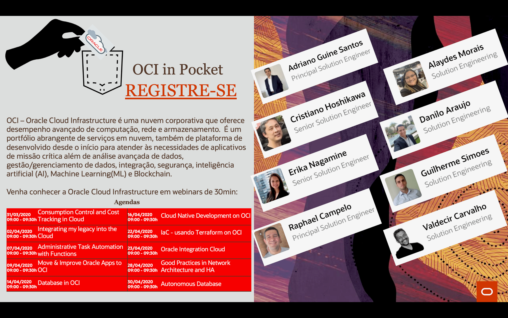

Série de Palestras Online - OCI in Pocket - Abril 2020
Blog Oracle Eventos OCICompartilhe esse post nas redes sociais...
Olá Homelabers!
O time de Solutions Engineers da Oracle está promovendo uma série de webinars curtinhos de 30 minutos para você começar o seu dia aprendendo sobre novas tecnologias. É o OCI in Pocket e gostaria de convidá-los a participar!
OCI in Pocket

O OCI in Pocket são palestras técnicas sobre diversos temas relacionados a Cloud Computing com duração de 30-40 minutos onde você poderá acompanhar e tirar dúvidas com os especialistas de Cloud da Oracle.
E a participação é totalmente gratúita, basta fazer a sua inscrição no webinar - usamos a plataforma Zoom.us - e pronto.
Não deixe de participar e acompanhar as lives. Aproveite a quarentena para ganhar novos conhecimentos.
Agenda de Abril 2020
Essa é a agenda de webinars do OCI in Pocket para Abril. Os temas são bastante diversos e com os melhores especialistas em Oracle Cloud.
| Data | Título | Palestrante |
|---|---|---|
| 31/03/2020 | Controle de Consumo e rastreabilidade de custos em Nuvem | Raphael Campelo |
| 02/04/2020 | Integrando o meu legado à Cloud | Danilo Araujo |
| 07/04/2020 | Automoção de Tarefas Administrativa com Functions | Guilherme Simoes |
| 09/04/2020 | Move & Improve Oracle Apps to Oracle Cloud Infrastructure | Adriano Guiné |
| 14/04/2020 | Banco de dados no OCI | Erika Nagamine |
| 16/04/2020 | Desenvolvimento Cloud Native on OCI | Cristiano Hoshikawa |
| 22/04/2020 | Terraform e OCI | Raphael Campelo |
| 23/04/2020 | Oracle Integration Cloud | Danilo Araujo |
| 28/04/2020 | Boas Práticas de Arquitetura de Rede e Alta Disponibilidade | Guilherme Simoes |
| 30/04/2020 | Autonomous Database | Erika Nagamine |
Lembrando que os webinars começam sempre as 09:00am (horário de Brasília) e tem a duração aproximada de 30-40 minutos.
A agenda e seu conteúdo podem mudar, fique de olho no meu twitter que eu avisei sobre qualquer mudança!
Como participar
Para participar basta fazer sua inscrição no link bit.ly/oci-in-pocket. Você irá receber um e-mail com a confirmação de inscrição e o link para acessar o Zoom. Você só precisa se cadastrar uma vez para ter acesso a todos os webinars!
https://bit.ly/oci-in-pocket
Eu recomendo a todos participarem desses webinars, é uma forma bacana e rápida de conhecer novas tecnologias.
Pegue seu café e venha participar conosco! Nos vemos lá!
Compartilhe esse post nas redes sociais...
Valdecir Carvalho
Nerd e pai orgulhoso da Mariana e João. Profissional Sênior de TI com foco em arquitetura de infraestrutura e cloud computing. Blogueiro, podcaster, palestrante, amante de comunidades técnicas, fotógrafo aposentado e adora jogos antigos.
#vExpert · #VMUGLeader · #VUGBrasil · #vBronwBagBrasil · #VeeamVanguard